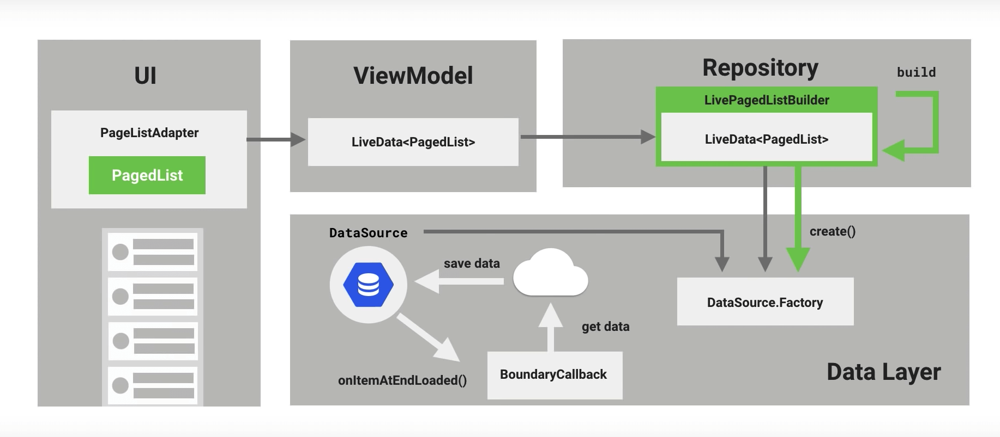
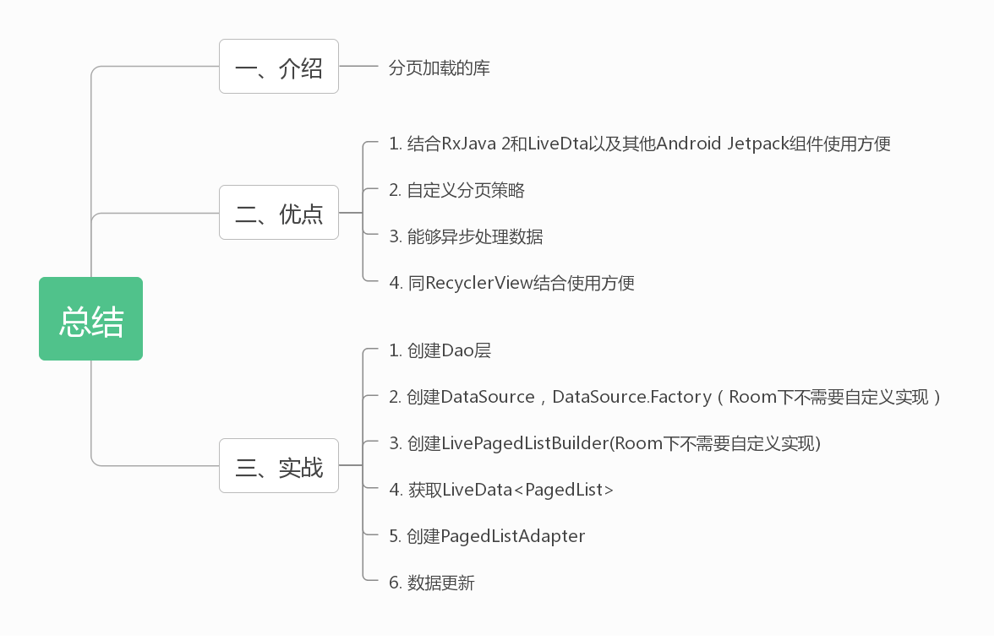

介绍 官方文档：Paging 网络方式 ，数据库方式
谷歌官方的介绍：
The Paging Library helps you load and display small chunks of data at a time. Loading partial data on demand reduces usage of network bandwidth and system resources.
可以看到，官方的介绍就是我们上面提及的内容，我们再来看看 Paging 是如何运作的：

当然，我需要做更具体的介绍，至于 ViewModel 和 LiveData，可以翻阅我的前几期博客，关键元素如下：
名称
作用
PagedList
一个可以以分页形式异步加载数据的容器，可以跟 RecyclerView 很好的结合
DataSource或DataSource.Factory
数据源，DataSource 将数据转变成 PagedList，DataSource.Factory 则用来创建 DataSource
LivePagedListBuilder
用来生成 LiveData，需要 DataSource.Factory 参数
BoundaryCallback
数据到达边界的回调
PagedListAdapter
一种 RecyclerView 的适配器
优点
RxJava 2 以及 Android Jetpack 的支持，如 LiveData、Room。
自定义分页策略。
异步处理数据。
结合 RecyclerView 等。
实战 因为本文是 Android Jetpack 系列文章，所以主要介绍配合 LiveData 使用，对于 RxJava 的配合使用，本文会一笔带过。
第一步 添加依赖 1 2 3 4 5 6 ext.pagingVersion = '2.1.0-alpha01' dependencies { // ... 省略 // paging implementation "androidx.paging:paging-runtime:$pagingVersion" }
第二步 创建数据源 1. 非 Room 数据库
名称
使用场景
PageKeyedDataSource<Key, Value>
分页请求数据的场景
ItemKeyedDataSource<Key, Value>
以表的某个列为 key，加载其后的N个数据（个人理解以某个字段进行排序，然后分段加载数据）
PositionalDataSource
当数据源总数特定，根据指定位置请求数据的场景
这里我们以 PageKeyedDataSource<Key, Value> 为例，虽然这里的数据库使用的是 Room，但我们查询数据以返回 List 代表着通常数据库的使用方式：
1 2 3 4 5 6 7 8 9 10 11 12 13 14 15 16 17 18 19 20 21 22 23 24 25 26 27 28 29 30 31 32 33 34 35 36 37 38 39 40 41 42 43 44 45 46 // 因为代表着不同方式，所以不需要看Dao层 class ShoeRepository private constructor(private val shoeDao: ShoeDao) { /** * 通过id的范围寻找鞋子 */ fun getPageShoes(startIndex:Long,endIndex:Long):List<Shoe> = shoeDao.findShoesByIndexRange(startIndex,endIndex) //... 省略 } /** * 自定义PageKeyedDataSource * 演示Page库的时候使用 */ class CustomPageDataSource(private val shoeRepository: ShoeRepository) : PageKeyedDataSource<Int, Shoe>() { private val TAG: String by lazy { this::class.java.simpleName } // 第一次加载的时候调用 override fun loadInitial(params: LoadInitialParams<Int>, callback: LoadInitialCallback<Int, Shoe>) { val startIndex = 0L val endIndex: Long = 0L + params.requestedLoadSize val shoes = shoeRepository.getPageShoes(startIndex, endIndex) callback.onResult(shoes, null, 2) } // 每次分页加载的时候调用 override fun loadAfter(params: LoadParams<Int>, callback: LoadCallback<Int, Shoe>) { Log.e(TAG, "startPage:${params.key},size:${params.requestedLoadSize}") val startPage = params.key val startIndex = ((startPage - 1) * BaseConstant.SINGLE_PAGE_SIZE).toLong() + 1 val endIndex = startIndex + params.requestedLoadSize - 1 val shoes = shoeRepository.getPageShoes(startIndex, endIndex) callback.onResult(shoes, params.key + 1) } override fun loadBefore(params: LoadParams<Int>, callback: LoadCallback<Int, Shoe>) { // ... 省略 类似loadAfter } }
DataSource 创建好了，再创建一个 DataSource.Factory，这个比较简单，返回上面创建的 CustomPageDataSource 实例：
1 2 3 4 5 6 7 8 /** * 构建CustomPageDataSource的工厂 */ class CustomPageDataSourceFactory(val shoeRepository: ShoeRepository):DataSource.Factory<Int,Shoe>() { override fun create(): DataSource<Int, Shoe> { return CustomPageDataSource(shoeRepository) } }
2. Room 数据库
1 2 3 4 5 6 7 8 9 10 11 /** * 鞋子的方法 */ @Dao interface ShoeDao { //... 省略 // 配合LiveData 返回所有的鞋子 @Query("SELECT * FROM shoe") fun getAllShoesLD(): DataSource.Factory<Int, Shoe> }
不止简单了一个档次。
第三步 构建 LiveData 想要获得 LiveData 则需要先创建 LivePagedListBuilder，LivePagedListBuilder 有设分页数量和配置参数两种构造方法，设置分页数量比较简单，直接查看 Api 就可以使用，我们看看如何配置参数使用：
1 2 3 4 5 6 7 8 9 10 11 class ShoeModel constructor(shoeRepository: ShoeRepository) : ViewModel() { // 鞋子集合的观察类 val shoes: LiveData<PagedList<Shoe>> = LivePagedListBuilder<Int, Shoe>( CustomPageDataSourceFactory(shoeRepository) // DataSourceFactory , PagedList.Config.Builder() .setPageSize(10) // 分页加载的数量 .setEnablePlaceholders(false) // 当item为null是否使用PlaceHolder展示 .setInitialLoadSizeHint(10) // 预加载的数量 .build()) .build() }
第四步 创建 PagedListAdapter PagedListAdapter 就是特殊的 RecyclerView 的 RecyclerAdapter，跟 RecyclerAdapter 一样，需要继承并实现其方法，这里使用了 Data Binding：
1 2 3 4 5 6 7 8 9 10 11 12 13 14 15 16 17 18 19 20 21 22 23 24 25 26 27 28 29 30 31 32 33 34 35 36 37 38 39 40 41 42 43 44 45 46 47 /** * 鞋子的适配器 配合Data Binding使用 */ class ShoeAdapter constructor(val context: Context) : PagedListAdapter<Shoe, ShoeAdapter.ViewHolder>(ShoeDiffCallback()) { override fun onCreateViewHolder(parent: ViewGroup, viewType: Int): ViewHolder { return ViewHolder( RecyclerItemShoeBinding.inflate( LayoutInflater.from(parent.context) , parent , false ) ) } override fun onBindViewHolder(holder: ViewHolder, position: Int) { val shoe = getItem(position) holder.apply { bind(onCreateListener(shoe!!.id), shoe) itemView.tag = shoe } } /** * Holder的点击事件 */ private fun onCreateListener(id: Long): View.OnClickListener { return View.OnClickListener { val intent = Intent(context, DetailActivity::class.java) intent.putExtra(BaseConstant.DETAIL_SHOE_ID, id) context.startActivity(intent) } } class ViewHolder(private val binding: RecyclerItemShoeBinding) : RecyclerView.ViewHolder(binding.root) { fun bind(listener: View.OnClickListener, item: Shoe) { binding.apply { this.listener = listener this.shoe = item executePendingBindings() } } } }
布局文件只有一个ImageView，不再赘述。
第五步 监听数据 同样使用了 Data Binding，FragmentShoe 的布局仅仅只用了一个 RecyclerView，比较简单，也不再赘述。
1 2 3 4 5 6 7 8 9 10 11 12 13 14 15 16 17 18 19 20 21 22 23 24 25 26 27 28 29 30 /** * 鞋子页面 */ class ShoeFragment : Fragment() { // ... 省略 override fun onCreateView( inflater: LayoutInflater, container: ViewGroup?, savedInstanceState: Bundle? ): View? { val binding: FragmentShoeBinding = FragmentShoeBinding.inflate(inflater, container, false) context ?: return binding.root val adapter = ShoeAdapter(context!!) binding.recycler.adapter = adapter onSubscribeUi(adapter) return binding.root } /** * 鞋子数据更新的通知 */ private fun onSubscribeUi(adapter: ShoeAdapter) { viewModel.shoes.observe(viewLifecycleOwner, Observer { if (it != null) { adapter.submitList(it) } }) } }
这样，我们的程序就可以分段加载数据了，感兴趣的可以打一下日志：
1 2 3 4 5 6 2019-06-30 17:15:00.564 32051-32117/com.joe.jetpackdemo E/CustomPageDataSource: startPage:2,size:10 2019-06-30 17:15:02.836 32051-32112/com.joe.jetpackdemo E/CustomPageDataSource: startPage:3,size:10 2019-06-30 17:15:13.705 32051-32113/com.joe.jetpackdemo E/CustomPageDataSource: startPage:4,size:10 2019-06-30 17:15:15.869 32051-32116/com.joe.jetpackdemo E/CustomPageDataSource: startPage:5,size:10 2019-06-30 17:15:19.986 32051-32117/com.joe.jetpackdemo E/CustomPageDataSource: startPage:6,size:10 2019-06-30 17:15:22.102 32051-32112/com.joe.jetpackdemo E/CustomPageDataSource: startPage:7,size:10
更多 RxJava 2 如此强大，怎么能少了对 RxJava 2 的支持呢？对于上述的代码，我们只要将数据观测的 LiveData 修改成 RxJava 2 就行了，因为 Room 对 RxJava 2 也提供了支持，并且 RxJava 2 和 LiveData 做的本质工作是相同的，这里不写代码了，感兴趣的稍微查看一下官方文档就行了。
总结 
参考文章 《Android Jetpack之Paging初探》 《官方文档》